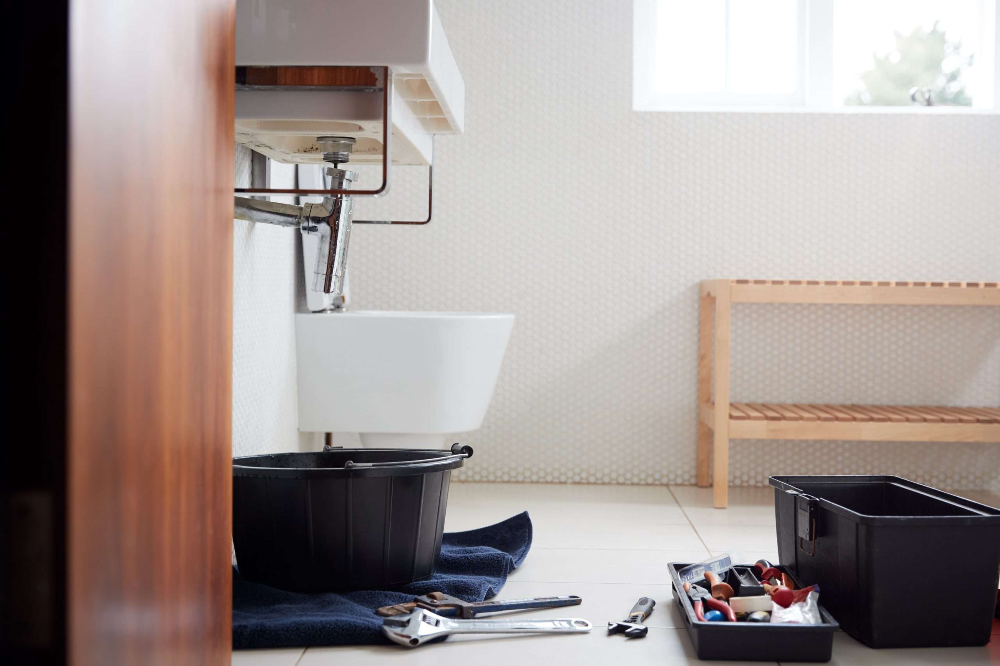
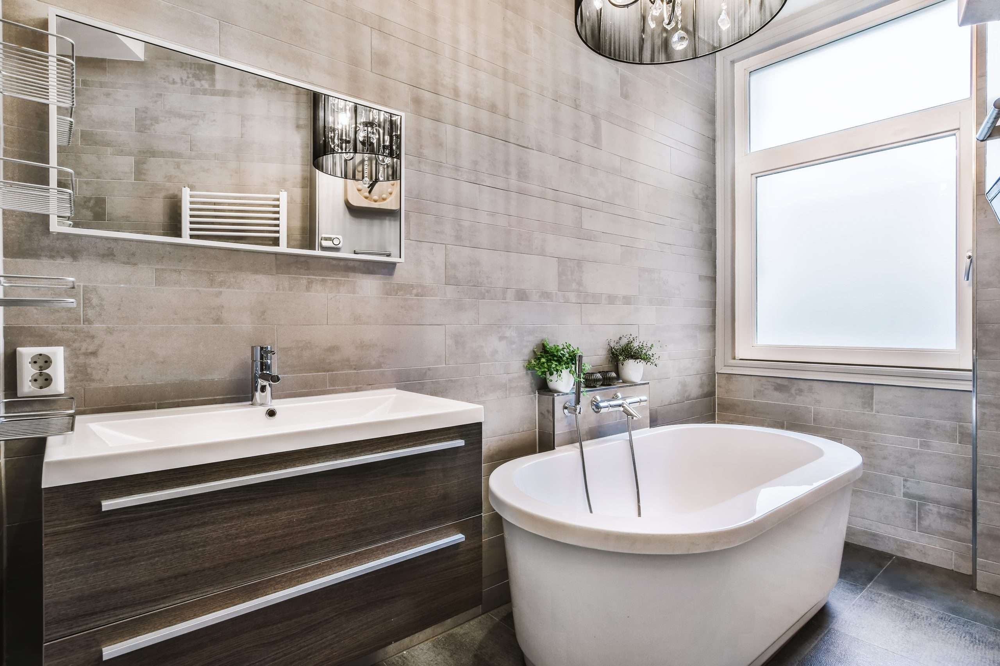

01
Rörservice
Felsökning, reparation och åtgärder för kunder som behöver snabb och trygg hjälp.
Behöver du hjälp med rör, VVS-installation eller felsökning? AT Rörservice hjälper privatpersoner, föreningar och företag i Stockholm med tydlig kontakt och trygg service.

Från akuta läckage och felsökning till planerade installationer i kök, badrum och tekniska utrymmen.
Felsökning, reparation och åtgärder för kunder som behöver snabb och trygg hjälp.
Installationer i kök, badrum, tvättstuga och tekniska utrymmen.
Installation och anpassning av VVS vid renovering av badrum, kök och andra våtutrymmen.
Beskriv vad du behöver hjälp med, bifoga gärna bild och få återkoppling kring nästa steg.
Vid vattenläckor, stopp, installationer eller renoveringar är det skönt med en kontakt som gör nästa steg enkelt. Ring direkt eller skicka en offertfråga med adress och en kort beskrivning.
Ring eller skicka en kort offertfråga med adress och en beskrivning av ärendet.
AT återkommer med nästa steg, bedömning eller offert beroende på ärendet.
Arbetet utförs noggrant och tydligt, med löpande kontakt från första besök till färdig åtgärd.
Efter utfört arbete får du råd, dokumentation vid behov och en enkel väg tillbaka vid nya ärenden.
AT Rörservice arbetar med installation, reparation och service där detaljerna bakom väggar och i badrum behöver bli rätt från början.

Badrum & installationerRing för snabb kontakt eller mejla en offertförfrågan med adress, vad ärendet gäller och gärna en bild om det underlättar bedömningen.
Hägersten och Stockholm med fokus på rörservice, VVS-installationer och offertförfrågningar.
Begär offert